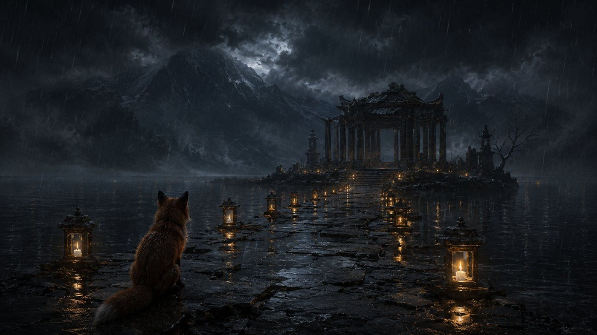
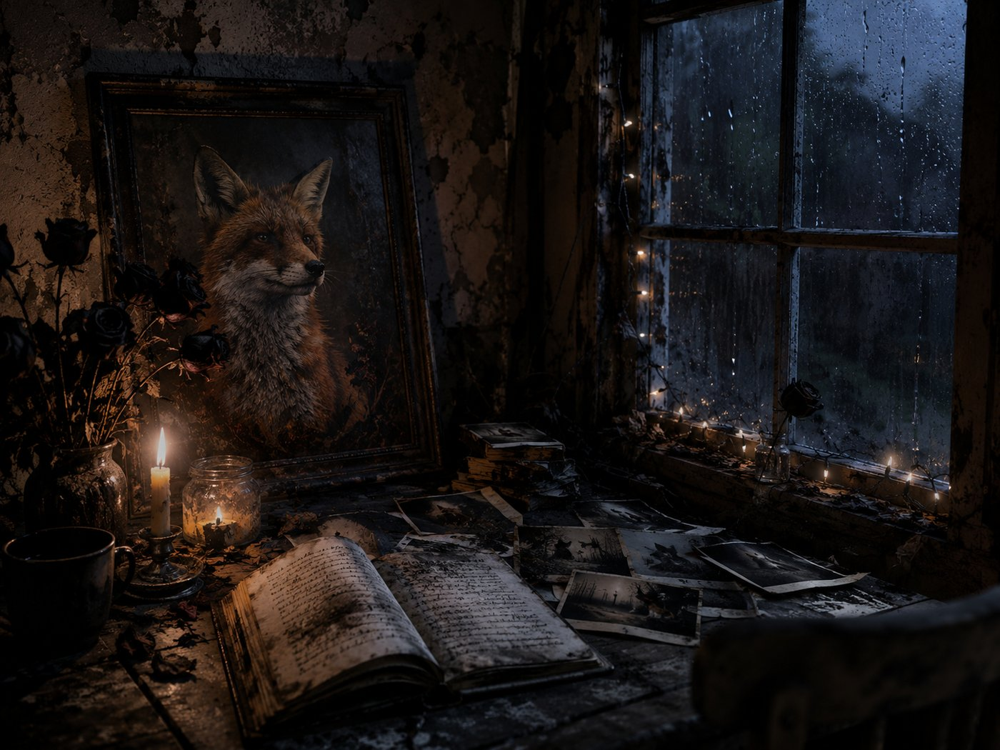
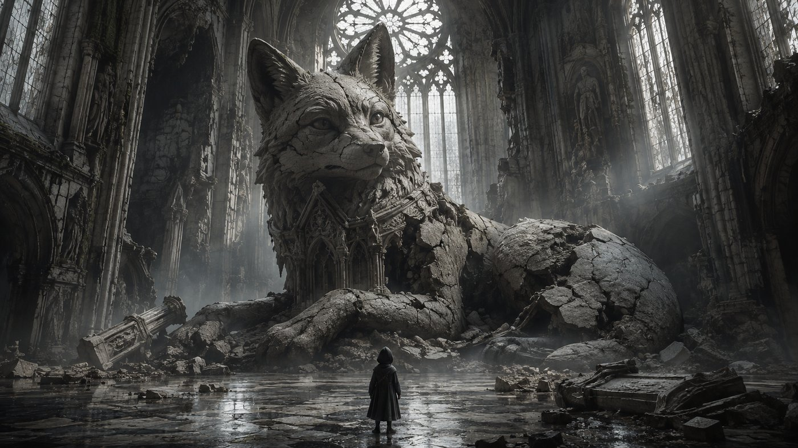
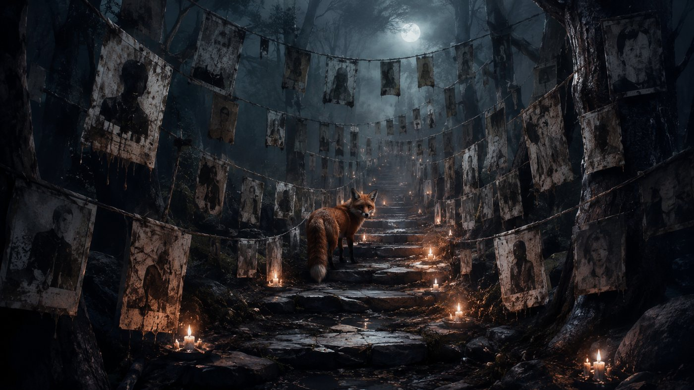
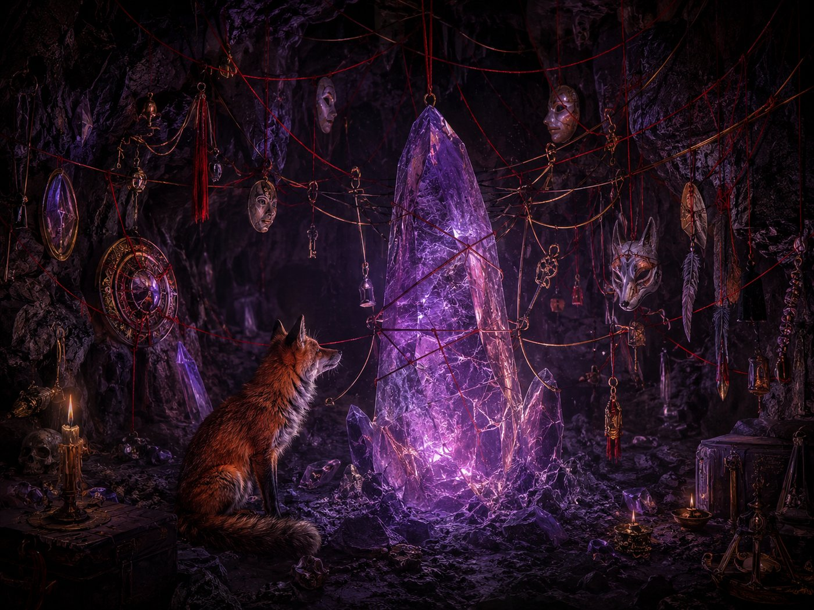
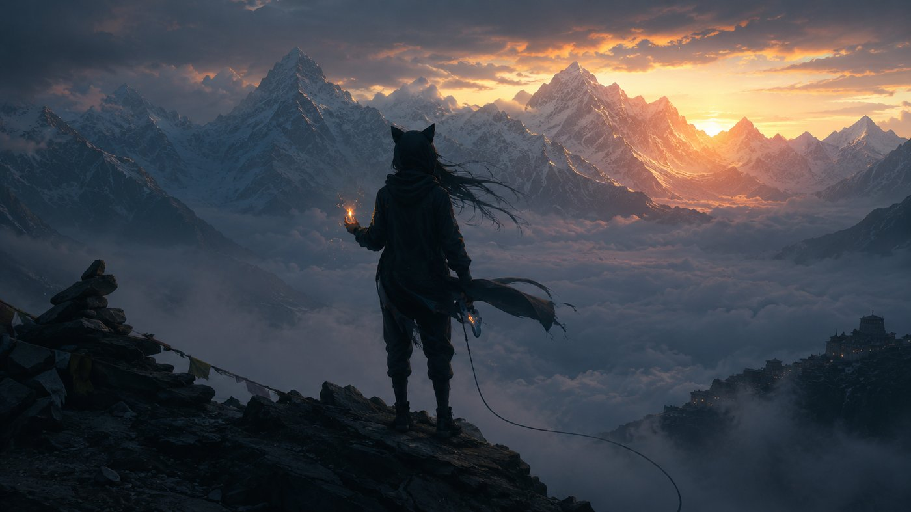
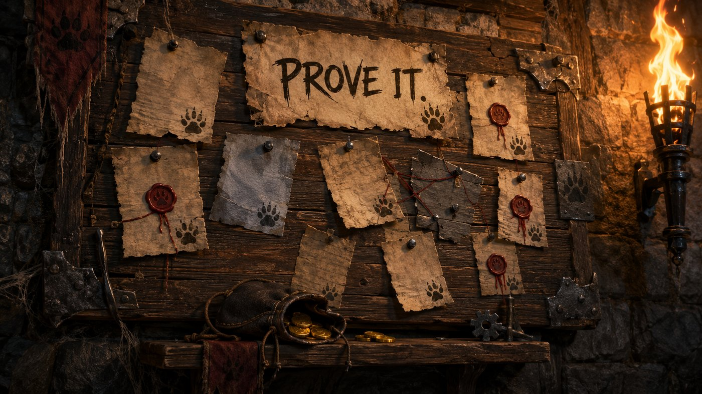
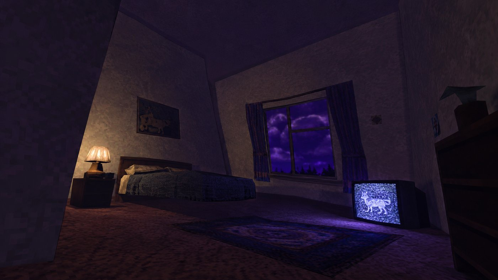
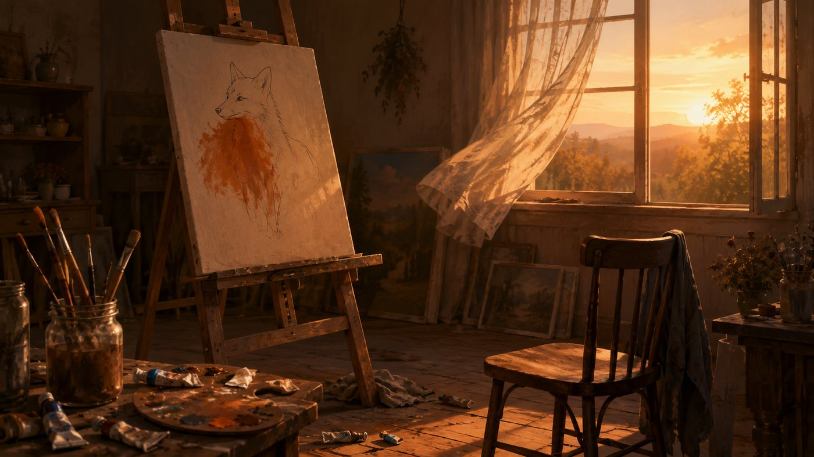
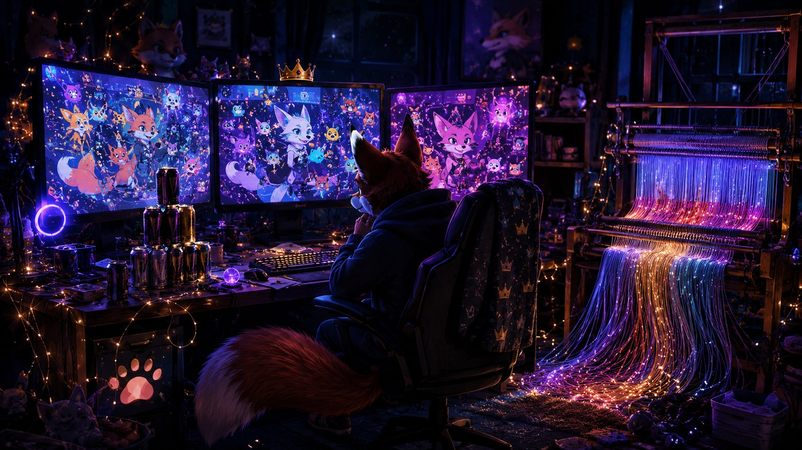

the fox knows where this is.
it keeps going back.
LOCATION: UNKNOWN
STATUS: ACTIVE

who painted this?
the frame is older
than the wall.

they built the church
ON TOP of it.
it was already here.

every face on the line
is someone who was here
and isn't anymore.

the red thread connects
them all to the crystal.
the crystal connects
to nothing.
that's the point.
THE SECOND WALL

click to enter
she showed up three times.
that was enough.
CONNECTED TO: THE LOOM
DIRECTION: UP
EXTREME: ALTITUDE
THE SUMMIT
v0.1 — half-explored
>

click to enter
salary for presence.
quest board for output.
no salary? prove it.
PROVE IT.
the board is listening. what do you bring?
ðŸ¾

click to enter
the geometry is wrong.
the sky is the wrong color.
the fox is in the static.
you are in a room. the walls don't meet properly. use arrow keys.
↑ ↓ ↠→ to move | the rooms shift when you're not looking

click to enter
the light is beautiful
but nobody's using it.
you can only paint
outside the fox.
you may only use orange. you may not paint the fox.

click to enter
the chaos is the system.
the loom weaves light
into thread.
the thread weaves
back into light.
CONNECTED TO: THE SUMMIT
DIRECTION: DOWN
EXTREME: DEPTH
THE LOOM
v0.1 — half-explored
>
ten images. five asked for. five decided by the protocol.
five watched. five half-explored.
the thread connects. it does not explain.
← return to the fire